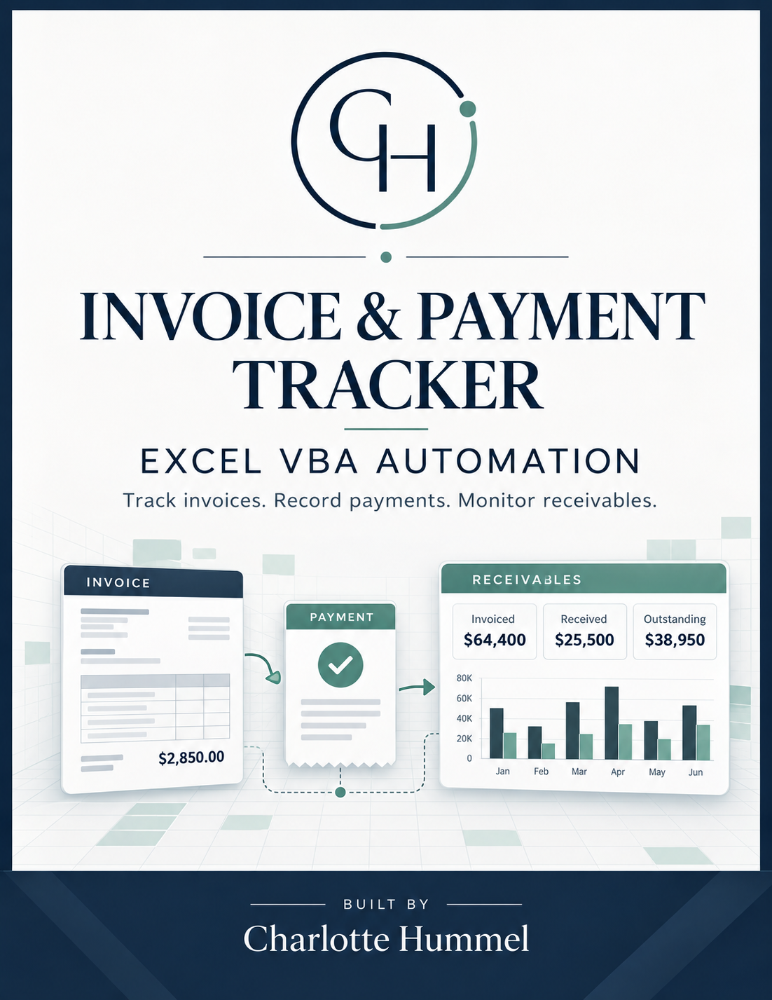
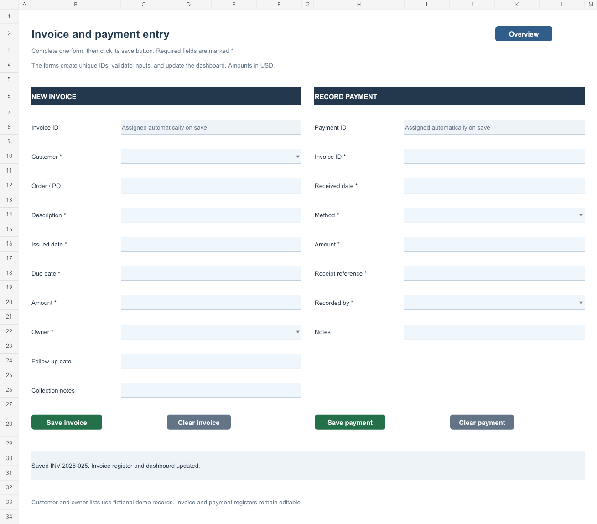

EXCEL · VBA · RECEIVABLES
A clear view of
every invoice.
Invoice & Payment Tracker
From a new invoice to a recorded payment and an updated balance. A practical Excel tool that brings everyday receivables work into one organized workflow.
Fictional business data. Real VBA source included.

01
Capture the invoice
Required fields, date checks, and automatic IDs keep entry consistent.
02
Apply the payment
Match receipts to invoices, including partial payments and overpayments.
03
See what’s outstanding
Review customer balances, overdue amounts, and receivables aging.
EXPLORE THE WORKFLOW
Put the tracker to work.
This browser preview recreates the workflow in JavaScript. The downloadable Excel workbook runs the VBA automation.
Invoice overview
Follow the guided example or add your own sample entry.
Receivables aging
Outstanding balance by days past due
THE EXCEL PROJECT
An interface with substance.
The workbook combines structured tables, worksheet formulas, and VBA procedures with a clear separation between input and calculated fields.


What the automation handles
- Validated entry
Checks required fields, dates, amounts, and matching invoice IDs before saving.
- Table updates
Reuses empty rows or expands Excel tables, assigns IDs, and fills calculated columns.
- Reporting
Recalculates customer balances and aging using the chosen reporting date.
- Navigation & recovery
Opens on the cover, routes buttons to the right workflow, and restores calculated formulas with Refresh.
Implementation and validation notes
Excel: five worksheets, two structured tables, formula-based balances and aging, and macro-assigned buttons. VBA: ModTracker handles entry and navigation; ModFormulas restores calculated columns; ThisWorkbook activates the cover.
The browser preview uses integer cents and a fixed sample reporting date. It does not execute VBA or edit the Excel file. Workbook checks use an offline VBA interpreter; native Excel validation is documented separately and has not been certified here.
TAKE A CLOSER LOOK
Explore the workbook.
Read the code.
A self-contained Excel/VBA portfolio project with fictional data and documented workflows.
Download the Excel workbook Project documentation Desktop Excel is required to run VBA macros.